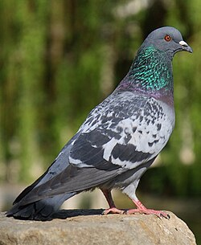
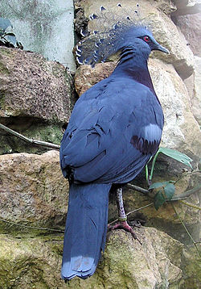
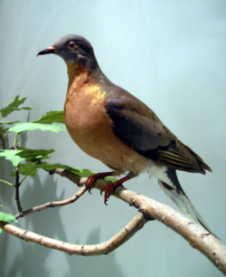
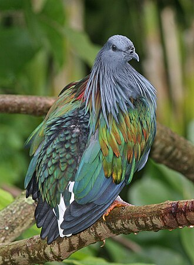
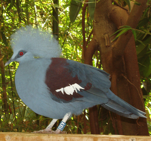

Paloma bravía
La paloma bravía, paloma asiática o paloma doméstica (Columba livia) es una especie de ave columbiforme de la familia de las colúmbidas nativa del sur de Eurasia y del norte de África. En México se considera como una especie exótica invasora; el género Columba alberga a las denominadas "palomas del viejo mundo"
Mas De Las Palomas BraviasPaloma crestada Victoria
La paloma crestada Victoria o gura Victoria (Goura victoria) es una especie de ave columbiforme de la familia Columbidae endémica de Nueva Guinea se conocen varias subespecies.
Mas De Las Palomas Crestada VictoriaPaloma Migratoria
La paloma migratoria, paloma de la Carolina o paloma pasajera (Ectopistes migratorius) es una especie de ave extinta, que pertenecía al orden de las Columbiformes, el mismo grupo en el que se clasifican las tórtolas y palomas comunes. Se trata del animal que ha sufrido el declive poblacional más acusado de la historia reciente, pues en un solo siglo pasó de ser el ave más abundante de Norteamérica (y tal vez del mundo) a engrosar la lista de especies extintas. Sus grandes bandadas de miles de individuos oscurecían la luz y el calor a su paso, y el aleteo producía brisa y ruido.
Mas De Las Palomas MigratoriasPaloma de Nicobar
La paloma de Nicobar (Caloenas nicobarica) es una especie de ave columbiforme de la familia Columbidae que habita ciertas pequeñas islas de Indonesia y las islas Nicobar. Es la única especie viviente del género Caloenas y se cree que es el pariente más cercano no extinto del dodo.
Mas De Las Palomas de NicobarPaloma Guora Occidental
La gura occidental o paloma coronada occidental (Goura cristata) es una especie de ave columbiforme de la familia Columbidae.
Mas De Las Palomas Guora Occidental